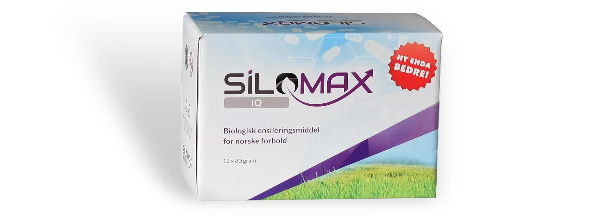
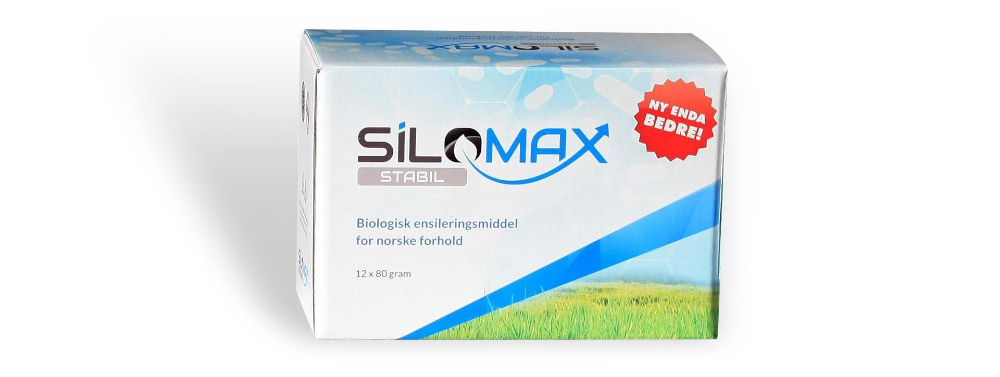
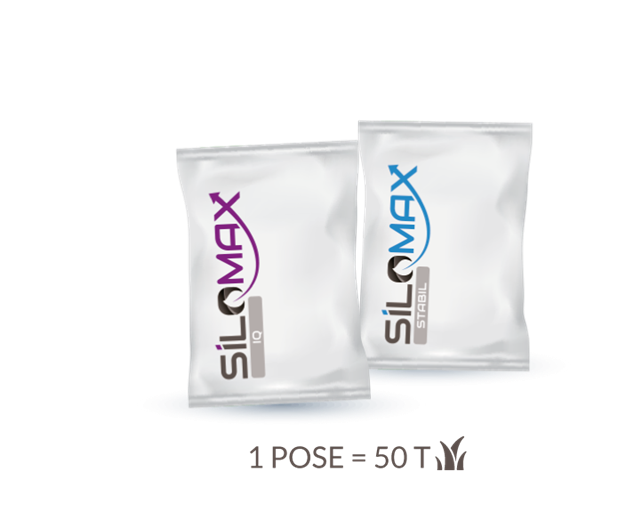
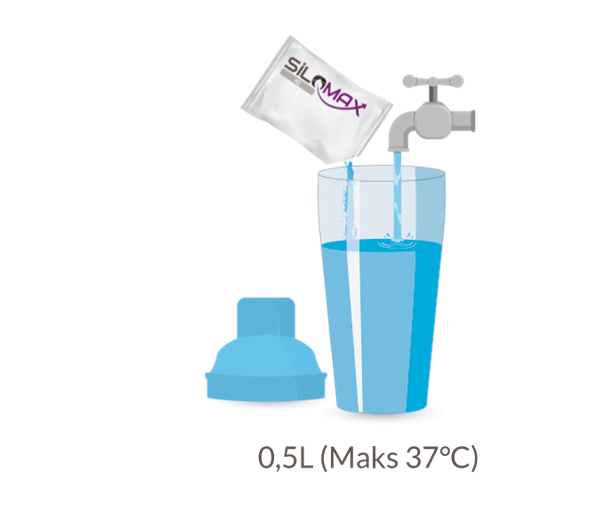
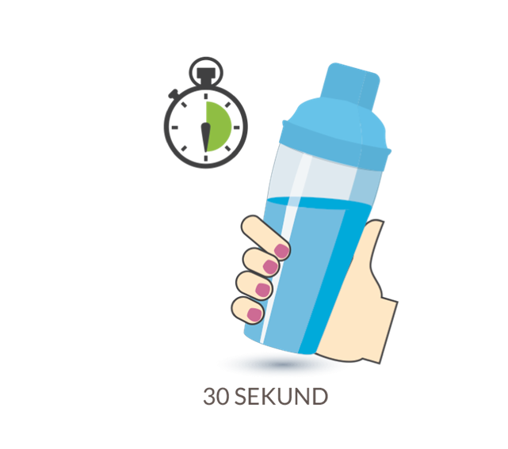
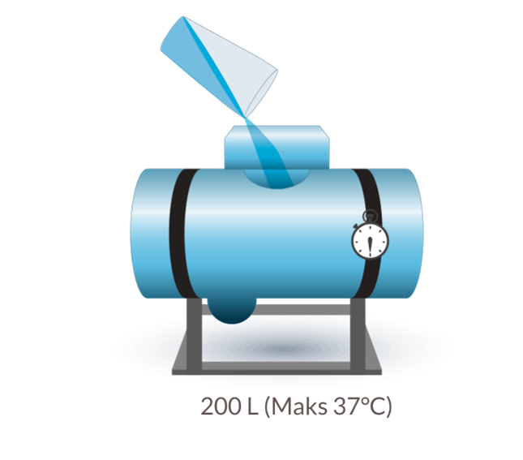

Silomax IQ
- Minst fyllstoff, unngå tette dyser og nedetid
- Rask og permanent senking av pH, hindrer feilgjæring
- Kan anvendes i økologisk produksjon
- Høyere proteinverdi og AAT
- Suveren smakelighet

Silomax STABIL
- Optimalt gjæringsmønster
- Bedre fordøyelighet og mer energi
- Betydelig bedre stabilitet etter åpning av silo
- Fås i esker med 12 poser til 50 tonn
- Kan anvendes i økologisk produksjon
BRUKSANVISNING



